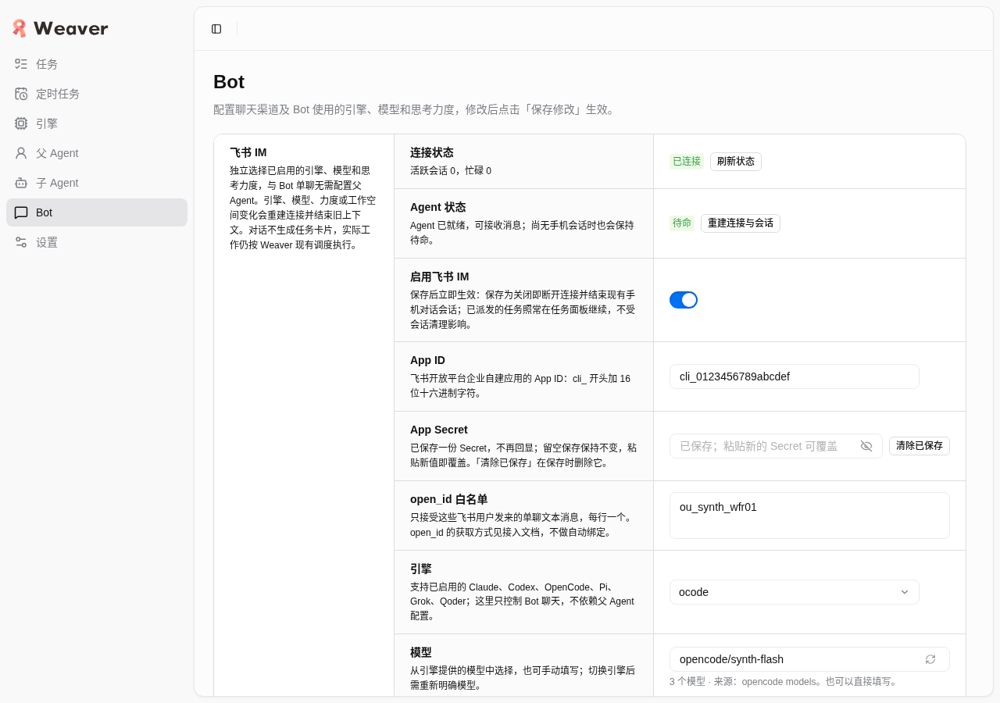
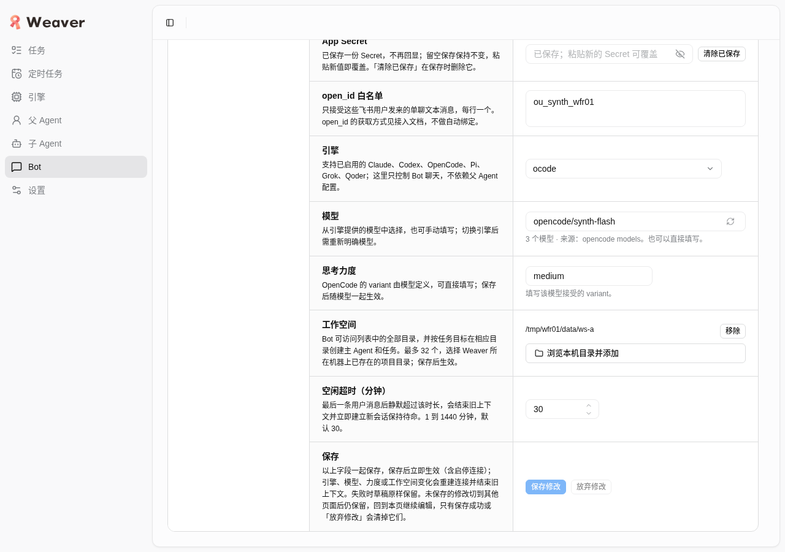
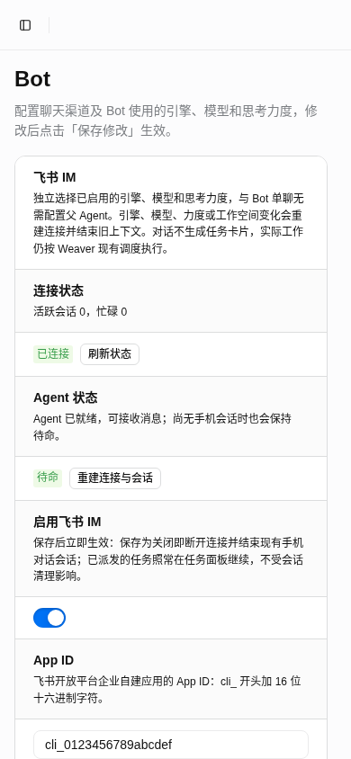
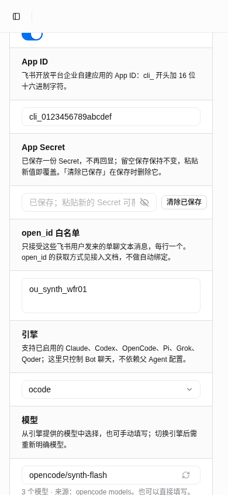
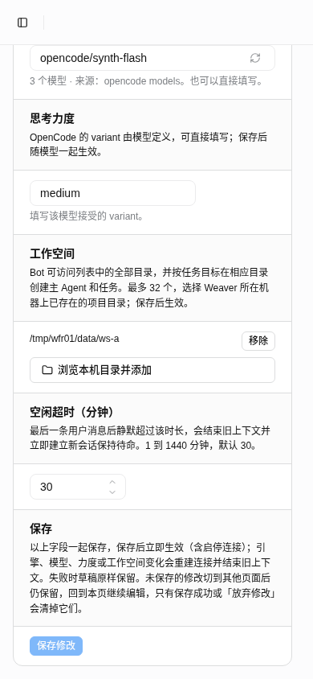
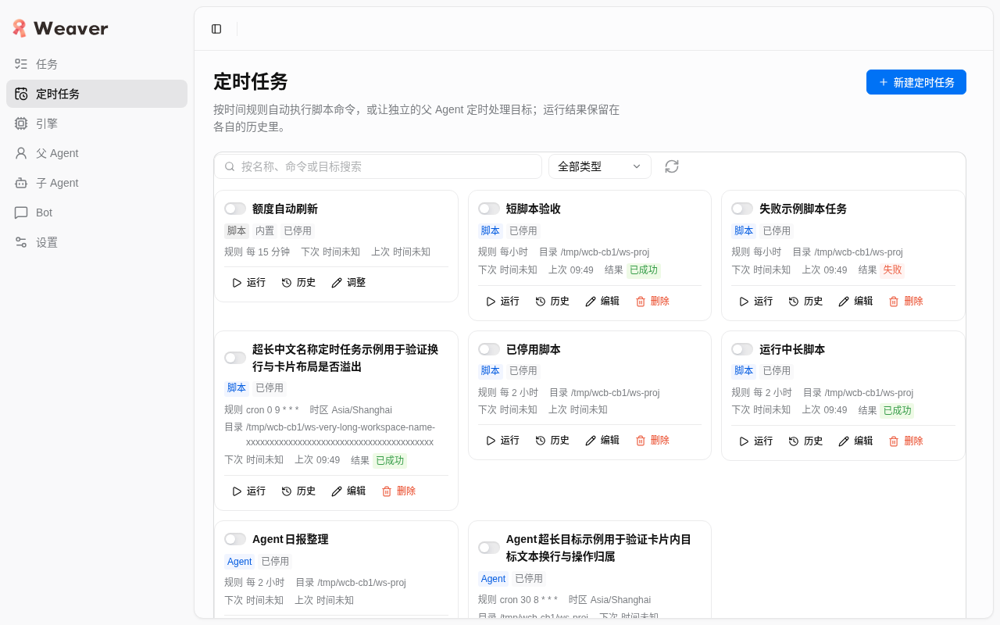
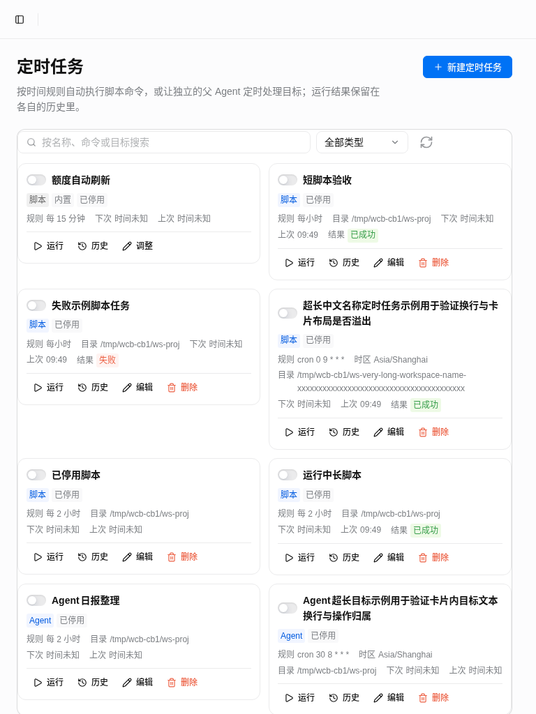
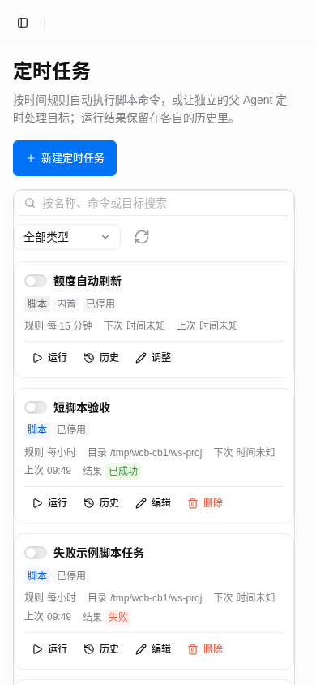

Weaver 0.6.0 发布验证报告 发布前验收通过
日期（Asia/Shanghai）：2026-10-22 · 被测代码：b4dae9c（tree 51a5343）· 门禁事实 final-facts.json ready=true（sha256 b41dfe9e…4368d4，只消费现值、不改写）。
最终结论：发布前验收通过。完整 check 1572 项（1562 通过 / 0 失败 / 10 跳过，均为 opt-in 真实 Herdr 用例）、产物 325 文件哈希 owner 全验、68 项 smoke（Node+Bun 双栈，0 失败）、ChatGPT Pro 源码复审明确通过（run 98975464，archive stored、gaps 0）。截图为 480d899 隔离快照实拍，前端 focus 8 文件哈希与最终 b4 一致（owner 已核），可作为固定画面证据沿用。
1. 实际结论
- 通过：完整
npm run check（taskset -c 18,19,20,21，b4）：1572 tests / 1562 pass / 0 fail / 10 skip / 0 cancelled，build 完成（log sha256 14c77193…951673）。10 项跳过为 opt-in 真实 Herdr 用例，已单独用 compiled Node/Bun + fakeCLI 跑 6 种正常场景、新 OC/Pi 7 场景、代表性 fault 与 late/close（exit 均为 0）。proof-*.jsonl 行数是合成用例行数，不等于测试数。
- 通过：产物与 smoke：候选 325 文件，node bundle sha256
b25bb6eb…84d16c961；三独立包哈希 owner 已全验（linux-x64 ab8c1d96…5072a2 等），敏感命中 0；68 项 smoke（Node+Bun 双栈）0 失败；原生模型未启用（nativeModels=false）。三平台中仅 linux-x64 运行，arm64（linux/darwin）仅编译和 hash、未运行。
- 通过：ChatGPT Pro 源码只读复审明确通过：run
98975464-3d35-448c-ba54-1653f0809964（sourceCommit=b4），archive stored、gaps 0，review sha256 03200c1a…624ce；buildsAndTests=false，即复审不含执行测试，与本地执行证据分开记录。
- 通过（固定画面范围）：隔离快照的 Bot 页在 1280 与 390 视口真实渲染：顶部状态（已连接 / 待命）、别名引擎
ocode、模型 opencode/synth-flash（3 个模型 · 来源 opencode models）、力度 medium、工作空间、空闲 30、保存干净态；双视口无横向溢出；截图为干净无 ref 红框实拍，未做图像后处理。
- 通过：别名目录检查
listEngineModels {engine: opencode} 返回 200（3 模型），即页面给别名用的 discovery id 真实可列；console 3 条（debug/info，无 error/warning），XHR 170，0 个 4xx/5xx，artifact_errors 为空。
- 通过：浏览器 focus：owner selector 50 项测试通过，别名 canonical discovery + 已存别名、键盘提交/Esc、列表失败手填重试；无横滚 1280/390；截图数据全 synthetic。
2. 验证范围与边界
- 本次只证明“固定当前前端画面”（Bot 顶部/保存段 + 卡片 3/2/1 列复用干净图），不重复六轮保存 / 32 目录 / 全部故障矩阵（f127 已验大矩阵；f635 修复已由 owner 做 Node 50+ 真实 HTTP 别名 200、键盘提交、失败手填重试），不称完整手机 / 6 引擎真模型通过（390 为视口模拟，非实机触屏）。
- fake 仅限外部边界：Feishu channel、native parent、5 个模型目录 CLI（合成 PATH）、合成 HOME 的 Claude settings.json、合成凭据（截图 Secret 仅占位不回显）；真实链路为 HTTP/Vite/RPC/Store/CAS/SQLite。fake 测试结论不当作真实模型结论。
- 未验 / 不宣称（final-facts limits 现值）：手机卡片/菜单/跨 root 真实工具调度未做本轮手机实测；Qoder 真实模型握手后 90 秒无 delta、原因未定；Pi 禁用 / Grok 402 跳过真实模型，不等同适配器测试失败；arm64 仅编译和 hash、未运行；Pro 为源码只读复审、非执行测试。
- 真实 4737 / 凭据 / DB / policy / proxy / CDP 9222 只读不碰；未发真实飞书与模型；未接触其他 owner 正在写的 Pi/OpenCode 主树源码作结论。quota-native-verification、私有备份、HAR/request body 等敏感证据未复制进报告。
3. 本次真实画面证据
3.1 Bot 页 1280（无 ref 红框实拍）

1280 顶部：连接状态已连接 / Agent 待命 / 启用 / App ID / Secret 占位 / open_id / 引擎 ocode / 模型 3 个来源。

1280 保存段：思考力度 medium / 工作空间 / 空闲 30 / 保存修改（干净态）。
3.2 Bot 页 390（无 ref 红框实拍，无横滚 390=390）

390 顶部：连接状态已连接 / Agent 待命 / 启用 / App ID。

390 引擎段：引擎 ocode / 模型 opencode/synth-flash。

390 保存段：模型与 3 个模型来源 / 力度 / 工作空间 / 空闲超时 / 保存修改。
采集参数与分类（次要明细）
截图包会话 weaver-final-report-01a15cad + bh task-profile（0700）；每条 agent-browser 命令带同一 profile，未用 CDP/default；screenshot 均不带 --annotate/--fullpage；先确认无高亮覆盖再采集。collect-evidence（reuse-page）计数：console 3（2 debug + 1 info，无 error/warning）、XHR 170、network-errors 0、artifact_errors []。证据目录在隔离快照内，随快照回收，不进发布附件。
4. 功能结论（已验 / 未验分开）
已验（此前真实验收，本报告引用结论不重复跑全套）
- Bot 独立页 / 多 workspace（添加/重复/重命名/移除/保存后 reload）/ 六引擎选择（含别名 ocode、pi_alt、qoder_alias，disabled/unsupported 真实解释不可选）——见 bot6-browser 与 bot-selector-fix 正证。
- Herdr 常驻待命：父进程常驻，空闲超时 1–1440 分钟可调（默认 30）；真正路由变化（引擎/模型/力度/工作空间/启停/显式重连）轮换重建（channel.close → parent.close → connect → parent.start），同配健康保存与仅 idle 调整保留上下文（无新增 marker）。
- 别名模型列表修复：kind→canonical discovery 映射（ocode→opencode 等），保存仍用原别名 ID；失败收束为 failed 态（可手填重试），键盘可提交引擎 Select（去掉非必要 showSearch）。
- 角色拖拽排序（父/子，鼠标 + 键盘，含 Esc 取消，CAS 冲突保留草稿）与配置 ID 免后缀（改名后引用一起更新）；本报告未配图（现存 roles 截图均带红框覆盖，不复制）。
- OpenCode 当前 Console Go 三窗口（5 小时/周/月）只读显示已用百分比与服务端重置时间，不自动增删阻断。
- 定时卡片 3/2/1 列（桌面三列、768 两列、手机单列），下图为复用 cards-browser 干净截图（数据全 synthetic）：

桌面三列。

768 两列。

手机单列。
- OpenCode 适配：prompt_async 经
system 传入原生 instructions；reasoning/private delta 经 part metadata 过滤，仅公开文本进正文。
- Pi retry：原生
auto_retry_end(success:true) 按最终成功结算（清 errorText、同一进程/context 继续），耗尽/真实失败仍 reject 原分类，取消路径不受影响。
未验 / 不宣称
- 终态原生协议（opencode/qoder/pi/grok parent terminal）未由本浏览器验证，fake parent 只合成回复；未发真实飞书消息/卡片，未跑真实模型与凭据，未测 busy/排队、stop/new-session、真实 idle 到期轮换。
- 未走 32 工作空间上限、2000 字符路径、bootstrap 预算；Secret 仅验证隐藏回显与落盘，未做清除/轮换路径。
- 完整手机真机触屏、6 引擎真模型列表、其他 Select 的 showSearch 键盘路径未验。
- 本包不重采产品截图、不重跑任何模型/应用矩阵；门禁数字以 final-facts 现值为准。
5. 迁移说明
schema 9→11：第 10 步仅给子 Agent（policy_workers）增加可选并发上限列（ALTER TABLE policy_workers ADD COLUMN max_parallel，为空即不限，旧库直接可用；owner 表 max_parallel 早已存在，非本次新增）；第 11 步清理已下线 zcode 引擎的残留配置（引擎行、子 Agent、父 Agent 引用、阻断与运行状态，含历史策略快照中的同类引用），历史任务原样保留、可照常读取。迁移只向前应用，无 DB 自动回滚。准确语义沿用 docs/releases/0.6.0.md。
6. 发布与链接
固定 tag v0.6.0：https://github.com/MarioJames/weaver/releases/tag/v0.6.0。本报告为发布前验收；发布与本地升级另由 owner 交付确认，本报告不伪称已上线。
7. 资源与清理
截图包自有 longrun scope、浏览器 session/profile、隔离快照、合成 data（DB/settings/markers/fakebin/fakehome/workspaces/vite 缓存）已在截图包精确回收（见旧 final-report/cleanup.json）；生产与其他 owner 数据/服务不动。本报告定稿复核用独立 session weaver-report-finalize-01a15cad 以 file:// 打开复核相对图可达、无横滚、结论一致，复核产物只留必要记录，图片已在持久 docs/verification/releases/0.6.0-assets/、不重复存放。